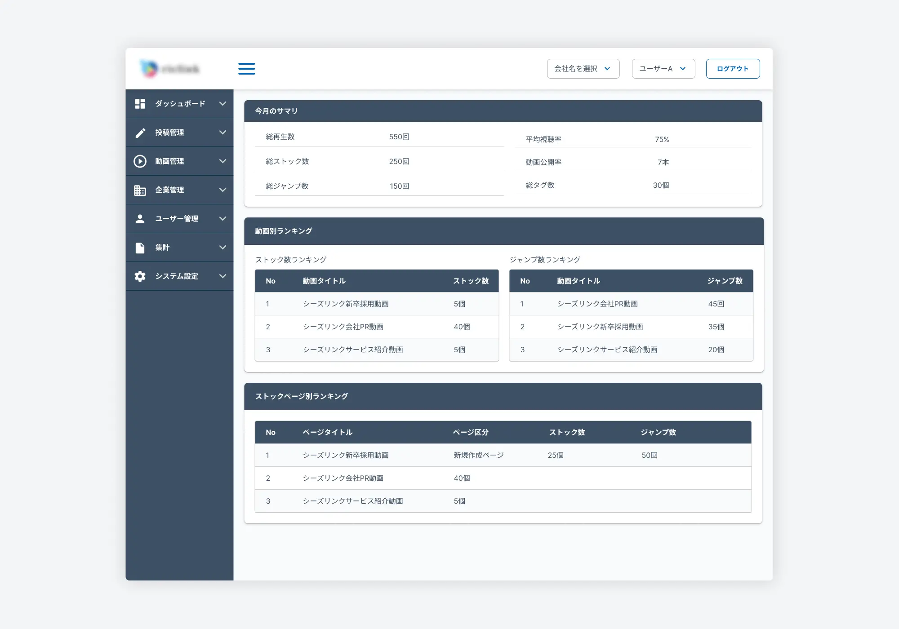
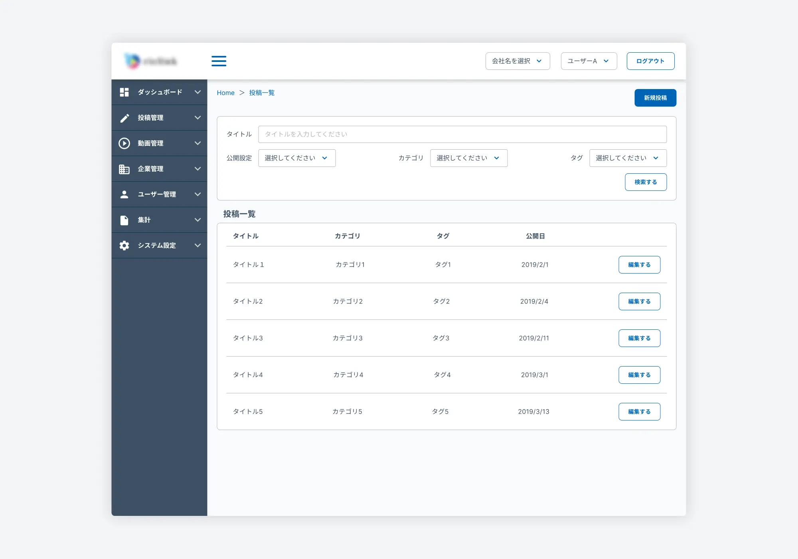
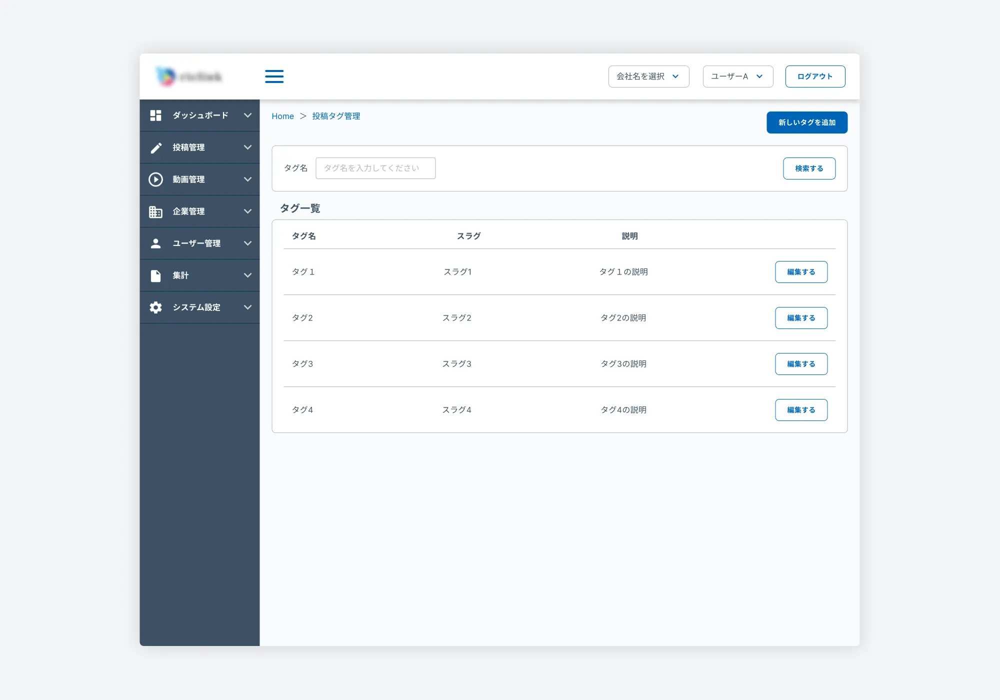

コンテンツマネジメントシステム
- Webアプリ
- 実務案件

本プロダクトは、コンテンツの一元管理やログ活用を通じて業務効率と提案力を高めるクラウドサービスの新規開発案件で、私はUIデザイナーとして本開発に携わりました。
- カテゴリー：Webアプリケーション、SaaS
- 制作種別：実務案件
- 担当領域：情報設計、ビジュアルデザイン、静的部分の実装
- 使用ツール・言語等：Figma, Laravel, PHP, Sass, Docker
- 参画期間：6ヶ月
どんなプロダクトか
本プロダクトは、営業・マーケティング領域における情報の属人化を解消し、コンテンツの一元管理・ログ活用によって業務効率と提案力を高めるクラウドサービスです。

プロジェクト概要
新規開発の受託案件（実務プロジェクト）として参画。PM1名、デザイナー2名（うち自身が1名）、エンジニア約10名のチーム体制で開発が進行しました。 戦略立案および大まかな要件定義が完了した段階からプロジェクトへ合流し、主にエンドユーザー向け画面のUI設計を担当しました。
担当範囲
- リサーチ・ヒアリング：ユーザーの行動フローやIA（情報設計）の検証に向けたヒアリングの実施
- 情報設計：ヒアリングに基づく行動フローの整理、情報のグルーピングおよび画面遷移、レイアウトの設計
- フロントエンド実装：静的部分のコーディング、およびデザインと実装の整合性確認
最終成果物（一部）





デザインのプロセス
デザインは以下のプロセスで進めました。
- 要件把握
- ユーザーインタビュー
- 情報設計・プロトタイピング
- 検証・改善
要件把握
本プロジェクトには、事業戦略や大枠のプロダクト要件、および基本的な機能定義が定まった段階からデザイナーとして参画しました。
対象となるプロダクトは、企業内における資料、ナレッジ、動画、Webリンクなどの多様なコンテンツをクラウド上で一括管理・共有するBtoB向けのコンテンツマネジメントシステム（CMS）です。 専門知識を必要としないノーコードでの運用性、常に最新情報を保持する同期機能、そして利用状況をリアルタイムで把握できる視聴ログの可視化機能など、組織内の情報流通を円滑化するためのコア要件が定義されていました。
参画初期の段階では、すでに整理されていた「プロダクトが目指すビジョン」「解決すべき組織課題」「各ロールが扱うべき情報や提供機能の網羅」といった詳細な要件の正確なキャッチアップに注力しました。 そのうえで、これらの決まった要件を単に画面に置き換えるのではなく、実際の現場で業務に組み込まれた際に「迷いなく機能するか」というUX視点での検証と、具体的な構造設計へ繋げる準備を整えました。
ユーザーインタビュー
大枠の要件定義とターゲットペルソナが定まった段階で、詳細な構造設計（情報設計・画面レイアウト・遷移関係）へ移行するために、追加の深掘りインタビューを実施しました。 すでに「何を解決したいか」という目的は整理されていたものの、管理者と一般ユーザーという異なるロールにおいて「各ユーザーがどのような順序で思考し操作するか」「迷わずストレスなくタスクを完了するにはどの情報の優先順位を上げるべきか」という現場レベルの行動文脈やメンタルモデルを解像度高く特定することが目的でした。
インタビューでは、現行の業務フローの実演（画面共有によるコンテキストインタビュー）や、画面要素の優先順位付け（カードソーティング）を実施しました。 管理者側に対しては、コンテンツ登録時の承認フローや修正作業の発生頻度、さらに「視聴ログ画面」を見た後に次に取れるべき具体的アクション（未視聴者への催促など）等を深掘りしました。 一方、一般ユーザー側に対しては、欲しい資料を探す際の検索行動の癖や、一覧画面で目的のコンテンツかを瞬時に判断するために必要な要素等（更新日時、タグ、作成者など）の優先度を洗い出しました。
情報設計
インタビューで得られた行動文脈や定性データをもとに、現場の使い勝手に直結する情報設計（操作フロー・レイアウト設計・情報の優先順位付け）へと着手しました。 設計にあたっては、ユーザーシナリオやユースケースの整理に加え、市場にある類似サービスの構造分析を実施し、今回のプロダクトに最適な構成を探りました。
また、単に理想の画面を描くだけではなく、実装時の技術的制約や開発工数を踏まえるため、エンジニアやプロダクトマネージャー（PM）と初期段階から密に連携を取りながら設計を進めました。これにより、実現可能性と高い操作性を両立させた情報構造を模索しました。
具体的な設計においては、インタビューで判明した情報の重要度に基づいて階層構造と遷移関係を整理しました。例えば、管理者向けUIでは、データを単にグラフとして可視化するにとどまらず、「視聴ログの確認から、そのまま未閲覧者に対してワンタップで催促リマインドを送信できる」という一連のアクションフローを組み込んだレイアウトを採用しました。
このように、初期の大枠要件を機械的に画面へ落とし込むのではなく、関係者との合意形成とユーザーの行動文脈に基づいた情報設計を行うことで、現場の運用と実用に最適化したUIデザインへと昇華させました。
プロトタイピング、検証・改善
デザインスタイルを適用したインタラクティブなプロトタイプを作成した後、実際の運用環境を模した検証を実施しました。 画面の見た目や単一の遷移確認にとどまらず、実際の業務で想定される実データやコンテンツ量を投入し、ユーザーが迷いなくタスクを完了できるか、心理的負荷なく操作できるかを多角的に検証・改善しました。
検証においては、定性的な使い勝手からエッジケースまで様々な改善点が抽出されましたが、特に「実データ投入時における一覧性の担保」や「アクション実行時の心理的ハードルの低減」といった観点から重点的なブラッシュアップを行いました。
例えば、ダミーデータでは問題のなかったカード型レイアウトにおいて、本番に近い長文の資料タイトルが入ると文字が途切れ、目的のコンテンツを識別しづらくなるという課題が浮き彫りになりました。これに対しては、表示形式を柔軟に変更できるリスト表示切り替え機能の導入や、カード内における情報の表示優先度の再設計を行い、コンテンツ量が増加しても視認性と検索性を維持できる構造へと改善しました。
また、管理者向けの「視聴ログ確認から未閲覧者へリマインドを送る」機能においては、ボタンを押した際に「相手にどのような文面で通知されるかが分からず送信を躊躇してしまう」という不安感が観察されました。この課題に対しては、送信前に通知文面のプレビューと対象者一覧を確認できる確認フローを挟む設計に変更し、誤操作の不安を取り除きながら安心してアクションを実行できる体験へとブラッシュアップしました。
このように、見た目の美しさだけでなく、実データに基づいたリアリティのある検証を重ねることで、ユーザーの潜在的な不安や運用の不確実性を粘り強く潰し込み、プロダクト全体の完成度とユーザー体験の質を高めました。
振り返り
本プロジェクトは新規開発の受託案件という特性上、複雑なユーザー課題の解決と「高い開発効率」の両立が強く求められる環境でした。 そのためUIデザイナーとして、現場の多様なニーズや心理的ハードルを破綻なくUIへと昇華させつつ、実装フェーズへ滑らかに繋げる立ち回りを意識しました。
特に、管理者と一般ユーザーという異なる立場や権限が交錯する中で、それぞれの相反する思考・行動パターンをひとつのプロダクトとして矛盾なく画面構造に落とし込む作業は大きな挑戦であり、深い学びとなりました。単に要望を画面に並べるのではなく、優先順位を徹底的に整理し、直感的な操作フローへと再構築する難しさを痛感しました。
同時に、この複雑なUIを絵に描いた餅にせず具現化するため、初期段階からエンジニアと密にコミュニケーションを取り、技術的な実現可能性や実装コストを逆算しながら設計を進めました。自身の実装知識を活かし、HTML構造を考慮したデータ作成を行うことで開発手戻りを最小限に抑え、スムーズな開発に貢献しました。
複雑なユーザー課題に向き合って納得感のあるUIへ落とし込むこと、そしてそれを実現可能な形で開発チームへ引き渡すことという、デザイナーとしての本質的な役割と責任を再認識できたプロジェクトです。